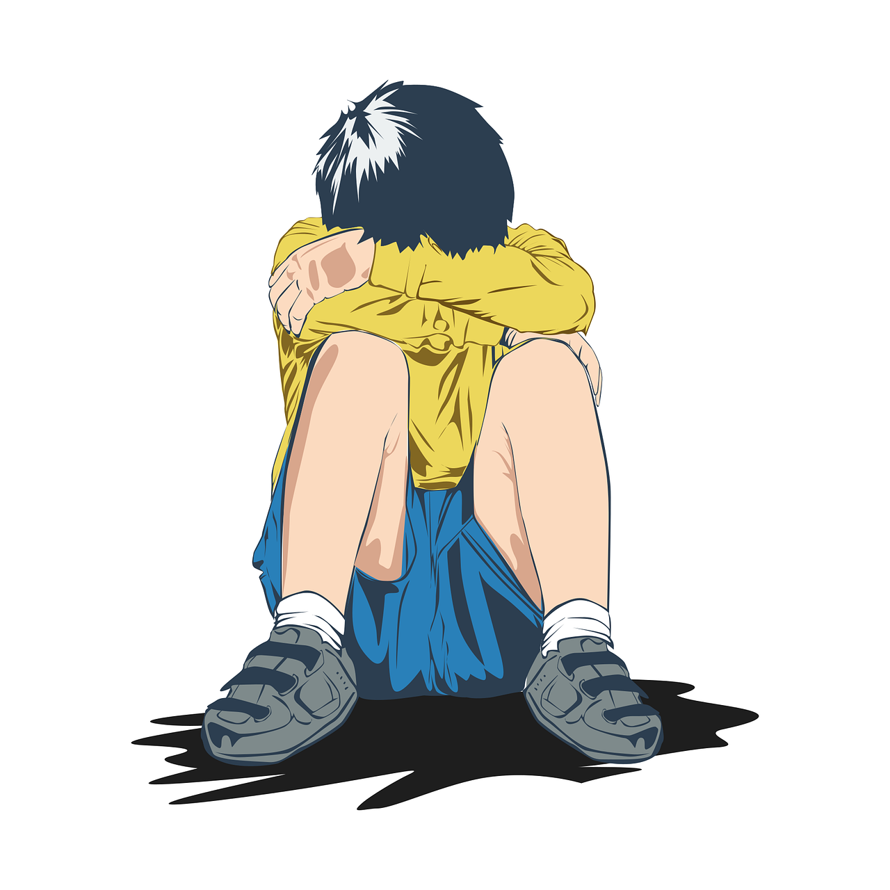

LOS TRASTORNOS INFANTILES MAS CUMUNES
La principal dificultad que encontramos en los trastornos infantiles es que los niños no son capaces de detectar cuándo algo está mal. En resultado, no son los originarios en pedir ayuda.
Por esta razón, el papel de las familias es fundamental en la detección de los trastornos infantiles. Las familias deben ser competentes de identificar estos problemas en sus hijos e hijas para pedir ayuda a especialistas.
Existen distintos trastornos infantiles. Estos se pueden desplegar de forma que el niño o la niña pierde el control sobre sus emociones (trastornos emocionales). De manera que perturban el comportamiento (trastornos de la conducta). Otros mezclan el desarrollo general del niño o la niña (trastornos generalizados del desarrollo).
Los trastornos de la conducta suelen surgir antes de que los trastornos emocionales. Por otro lado, aunque los trastornos generalizados del desarrollo suelen aparecer en la infancia, se mantienen hasta la edad adulta.
Es fundamental la intervención temprana de los trastornos infantiles y su correcto abordaje. Una intervención tardía puede producir en el menor una desadaptación al entorno, un bajo rendimiento y un decaimiento futura.
Suele ser necesario aclarar que cuando hablamos de Trastornos infantiles nos referimos a dificultades que persisten en el tiempo, causan malestar en el niño/a o impiden su desarrollo normal. Los trastornos infantiles se identifican por interferir en la vida cotidiana de los niños/as. De ahí lo importante que es una correcta detección de estas problemáticas.
DIFERENTES TIPOS DE TRASTORNOS INFANTILES
--> TRASTORNOS EMOCIONALES
Son las dificultades que afectan primordialmente a la vida del niño/a, sin que el entorno sea capaz de descubrirlo. Ordinariamente, son problemas que implican conductas pocas evidentes y encubiertas de tipo emocional (ansiedad, estado de ánimo).• Trastorno de Ansiedad por separación: Es uno de los diagnósticos más habituales. El niño/a muestra una enorme ansiedad cuando se separa de las personas que le cuidan.
• Mutismo selectivo: Los niños/as con mutismo selectivo se sienten cómodos y hablan normalmente en el entorno familiar. Sin embargo, cuando hay personas poco conocidas pierden esa confianza, se vuelven tímidos y retraídos.
• Fobias infantiles: La fobia es un miedo excesivo e irracional hacia un objeto o una situación específica. Pensamos que el miedo es una respuesta de angustia innata en el ser humano, ante el efecto de peligro físico o psicológico. las fobias más comunes son: fobia a la oscuridad, fobia a los perros o fobia a los médicos.
• Trastorno obsesivo-compulsivo: Un niña/a con este trastorno queda encerrado en conductas y pensamientos repetidos. El rito de control y lavado son lo más frecuentes en los niños/as.
• Trastornos de estrés-postraumático: Se exterioriza en niños/as que han sufrido algún tipo de trauma (violencia, abuso físico…). Reside en recuerdos recurrentes de la experiencia traumática.
Entre los trastornos emocionales también se encuentra la depresión
La depresión reside en un estado de ánimo susceptible o deprimido (triste) que se da junto con una depreciación del interés o placer por la realización de actividades.
La declaración de los síntomas depresivos en la infancia resulta característico respecto a los adultos ya que los niños/as no declaran quejas. En la infancia, suelen ser los padres los que descubren cambios en el comportamiento del niño/a.
Estos cambios suelen ser: Problemas para dormir o dificultades en la alimentación, conductas antisociales, nerviosismo, malestar físico sin explicación, hiperactividad o aislamiento.
--> TRASTORNOS DE LA CONDUCTA
Son aquellos trastornos en los que la detección se ve facilitada ya que implican conductas explícitas. Al igual que en los trastornos emocionales, la familia tiene un papel muy importante.
•Trastornos por Déficit de Antención e Hiperactividad: Consiste en la dificultad para mantener la atención y concentración, acompañada de un alto grado inquietud y actividad.
•Trastorno negativista desafiante: Se caracteriza por un comportamiento desobediente y hostil, dirigido con frecuencia, a las personas con las que el niño/a tiene confianza. A veces, se puede generalizar esete comportamiento a otras personas.
•Trastornos disocial: Se caracteriza por una trasgresión de los derechos de los demás y normas sociales, comportamientos disruptivos y negativos.
--> TRASTORNOS DE LA ELIMINACION
•Enuresis: Consiste en pérdidas involuntarias de orina una vez alcanzada la edad en la que existe un control vesical (4-6 años). La enuresis puede ser primaria (si el niño/a nunca ha conseguido controlar la emisión de orina), secundaria (si después de un periodo de control, se vuelve a producir pérdidas de orina), diurna (si ocurre durante el día) y nocturna (si sucede durante el sueño). Esta última es la más frecuente.
•Encopresis: Consiste en defecaciones repetidas e involuntarias, en lugares inadecuados y a una edad en la que se espera que haya control al respecto (a partir de los 4 años). La Encopresis puede ser primaria (si el niño/a nunca ha conseguido controlar la defecación), secundaria (si se produce después de un período de control).
--> TRASTORNOS POR TICS
Se caracterizan por tics vocales y motores involuntarios que pueden variar e incrementarse o reducirse con el transcurso del tiempo. Estos tics son frecuentes y repetitivos. Un ejemplo es el Síndrome de Gilles de la Tourette.
--> TRASTORNOS DE LA CONDUCTA AÑIMENTARIA
•Pica: Consiste en la ingesta de sustancias como tierra, trozos de papel, etc.
•Rumiación: Se caracteriza porque el niño/a juega con la comida que se ha ingerido, devolviéndola y volviéndola a masticar.
También pueden aparecer episodios de bulimia o anorexia, aunque se dan con menor frecuencia en la infancia.
--> TRASTORNOS DEL SUEÑO
En la edad infantil es frecuente que se den dificultades o problemas del sueño. Algunos ejemplos son: pesadillas, terrores nocturnos, negativas a dormir, despertares frecuentes, dificultades para conciliar el sueño, soonambulismo… Pueden darse como consecuencia de malos hábitos de sueño o secundarios a problemas de ansiedad, depresión…
--> TRASTORNOS DEL APRENDIZAJE
Conllevan una dificultad para adquirir competencias en algunas áreas como, por ejemplo: la lectura, las matemáticas, la escritura, según lo esperado para su edad, nivel escolar e intelectual. Una de las consecuencias más frecuentes son el bajo rendimiento y el fracaso escolar.
Algunos de los tipos más importantes son:
•Dislexia: Consiste en una dificultad en el aprendizaje y consolidación de la lectura y escritura.
•Discalculia: Se caracteriza por la dificultad para adquirir las habilidades matemáticas.
•Trastornos del Aprendizaje no Verbal: Se caracteriza por la dificultad en la organización de los espacios, dificultad para adaptarse a nuevas situaciones y en la interpretación de la información no verbal.
•Disgrafía: Consiste en una alteración en la expresión escrita. Esto es, el niño/a presenta dificultades para escribir bien.
•Disortografía: El niño/a presenta problemas para reconocer, comprender y reproducir los símbolos escritos así como para aplicar las normas ortográficas. Es una alteración que afecta al contenido y composición de las palabras. No afecta a la forma ni al trazado de la escritura.
•Disfasia: Se caracteriza por alteraciones en el uso del lenguaje oral y escrito y en su comprensión. Suelen ser niños/as que se relacionan poco por su reducido lenguaje, por lo que con frecuencia se confunde con el Trastorno del Espectro Autista.